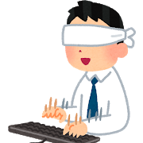

タッチタイピングを習得しよう！
あなたはタイピングをするときキーボードを見てはいませんか？それではキーボードを見て、ディスプレイを見て、またキーボードを見て、、、と作業効率がおちてしまいます。
では一体どうすればよいのか、そう、キーボードを見なければよいのです！
キーボードを見ないでタイピングをすることをタッチタイピング（ブラインドタッチ）と呼びます。
是非まずはキーボードを見ないでタイピングをすることから始めてください。
最初はとてもゆっくりでもいいので続けていれば段々速く打てるようになってきます。
